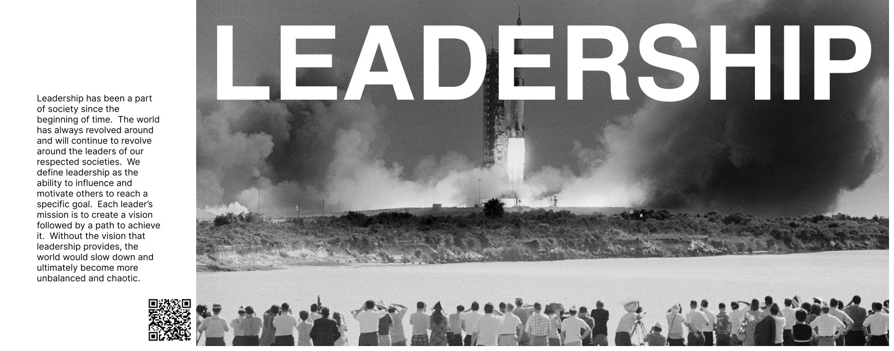
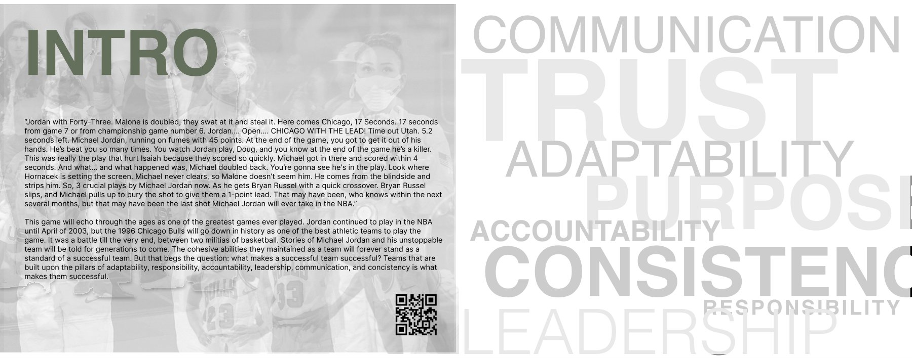
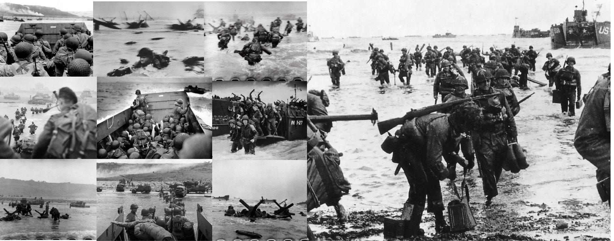

A book you hold, with something behind the page.
A printed book about teams in history, with QR codes on the page that open augmented reality experiences.
- Role
- Page layout, one of two designers
- Team
- Two designers, four writers
- Scope
- Editorial layout, AR integration
- Extent
- 26 spreads

The brief
I was part of a team of two designers and four writers, tasked with creating an interactive book that includes AR features.
As a team we made a book about teams in history that worked well together, built around the traits those teams shared: adaptability, responsibility, accountability, leadership, communication and consistency. As designers our job was the page layouts.
The layout system
We wanted the design simple but impactful, so we went with big images and bold text. The photography is black and white throughout, which lets material from D-Day, the Chicago Bulls and Apollo 11 sit in the same book without looking like a scrapbook.
Each trait opens on a spread where the word itself is the image, set large across historical photography. The body copy then runs in a narrow column against the picture, so a reader gets the idea before they get the argument.
The AR
We placed QR codes on the pages that take the reader to an experience. The one on the leadership spread lets you place a screen somewhere in your home and watch a video about Apollo 11.
That is why the spreads are composed the way they are. The QR code needs quiet space and a predictable position, so it sits low in the text column where it does not fight the photograph but is still obviously part of the page.
What I got out of it
This was a fun way to test my creativity and learn more about AR features. It was also a good opportunity to step away from making something on a screen and make something tangible, which broadened my skill in UX design.
The complete book is 26 spreads. Download the full book (PDF, 7.4 MB).


Next project
Park City Film